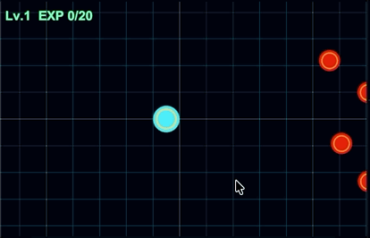

작업 목표
KitWright Unity MCP를 단순히 설치하는 데서 끝내지 않고, Qwen3.8-27B 기반 AI 코딩 에이전트가 실제 Unity 기능을 구현할 때 MCP가 어떤 부분에서 도움이 되고 어디까지 맡기는 것이 적절한지 확인하는 것이 목표였다.
작업 결과
이동 · 공격 표시 기능을 다시 구현해보면서 실제 기능 작업 흐름과 소요 시간, Compaction 발생 여부를 함께 벤치마킹해봤다.

처음에는 MCP가 오히려 작업을 늘렸다
초기에는 사용할 수 있는 MCP 도구를 많이 열어둔 상태로 테스트했다. 에이전트가 Editor 상태를 직접 확인할 수 있게 되면서 기능 구현 외의 검증까지 스스로 확장하는 경우가 생겼다.
설정 변경과 과도한 자동 검증이 함께 섞이면서 작업 시간이 크게 늘었다.
장시간 작업과 반복 검증으로 Context 압축도 세 번 발생했다.
기능 구현을 넘어 Play Mode, Screenshot, 런타임 상태 조사까지 이어졌다.
기능 구현과 검증 단계를 분리했다
MCP를 많이 사용하는 것 자체가 문제라기보다, 기능 구현 Task 안에서 에이전트가 검증 범위를 계속 확장하는 것이 더 큰 병목이라고 판단했다. 그래서 일반 기능 작업과 사람이 직접 확인하는 단계, 전체 Regression을 분리했다.
Feature Task
코드 구현 → Compile → 해당 기능의 Focused Test까지만 수행한다.
Manual Play Mode
실제 화면, 입력, 애니메이션, lifecycle은 직접 Unity에서 확인한다.
Regression Task
필요할 때 별도 요청으로 전체 관련 테스트를 실행한다.
AGENTS.md로 MCP 사용 범위를 고정했다
검증 범위를 매번 프롬프트에 반복해서 적는 대신 AGENTS.md에 기본 규칙으로 넣었다. Full Regression은 사용자가 명시적으로 요청했을 때만 실행하도록 하고, MCP Tool Profile 역시 에이전트가 임의로 바꾸지 못하도록 제한했다.
Focused Test 후 종료
Feature일반 기능 구현에서는 전체 EditMode / PlayMode Suite를 자동으로 실행하지 않는다.
Play Mode 자동 QA 제한
ScopeScreenshot, Pixel 검사, Input Simulation, Runtime Visual QA는 명시적으로 요청한 경우에만 수행한다.
MCP Profile 변경 금지
Tool Controlset_tool_profile 등을 이용해 에이전트가 Minimal/Core/Full을 스스로 변경하지 못하도록 했다.
Tool Exposure는 Full로 다시 열었다
한동안 Minimal Tool Exposure를 사용했지만, Scene 연결이나 Test Runner처럼 실제 Unity 작업에 필요한 도구가 빠져 있으면 에이전트가 다른 경로를 찾거나 설정을 다시 확인하는 과정이 생겼다.
이후 AGENTS.md가 검증 범위를 제대로 제한하는 것을 확인한 뒤에는 Tool Exposure를 다시 Full로 두고 필요한 도구를 바로 사용할 수 있게 했다.
Scene, Component, Compilation, Test Runner 등 필요한 Unity 도구를 바로 사용할 수 있다.
도구가 많아도 에이전트가 기능 범위를 임의로 확장하지 못하게 한다.
실행 중인 Editor를 종료하지 않고 그대로 Compile·Scene 연결·Test를 이어간다.
Context는 196K로 올려 다시 확인했다
기존 160K 환경에서는 실제 기능 작업 중 Compaction이 한두 번 발생하는 경우가 있었다. 이후 llama.cpp와 OpenCode의 Context를 196608로 맞추고 같은 Unity MCP 흐름에서 다시 작업했다.
| 작업 | 환경 | Elapsed | Compaction | Excl. Compaction |
|---|---|---|---|---|
| 이동 마커 | 160K · MCP Minimal | 27m 04s | 2x / 2m 42s | 24m 23s |
| 이동 마커 | 196K · MCP Full | 22m 43s | 1x / 1m 32s | 21m 11s |
| 공격 마커 | 196K · MCP Full | 13m 47s | 0x / 0m 00s | 13m 47s |
각 작업의 난이도와 구현 경로가 동일하지 않기 때문에 숫자를 단순한 모델 성능 비교로 보기는 어렵다. 다만 196K + Full Tool 환경에서도 검증 범위를 통제하면 한 번의 기능 구현을 Compaction 없이 끝낼 수 있다는 점은 확인했다.
정리 및 결론
오늘 테스트를 통해 MCP를 어디까지 사용하는 것이 좋은지 기준이 조금 더 명확해졌다. MCP가 코드 작성 능력을 직접 높이기보다는 실행 중인 Unity Editor를 AI 코딩 에이전트의 작업 흐름에 연결해주는 역할이 더 크게 느껴졌다.
확실히 좋아진 부분
- Unity Editor를 종료하지 않고 계속 작업할 수 있다.
- Scene wiring, Compile, Domain Reload 복구, Test Runner를 현재 Editor에서 처리할 수 있다.
- Tool Exposure가 Full이어도 AGENTS.md 규칙으로 자동 QA 범위를 제한할 수 있었다.
- 196K Context에서 Compaction이 줄어드는 사례를 확인했다.
계속 주의할 부분
- MCP Tool이 많다고 기능 구현 자체가 자동으로 빨라지는 것은 아니다.
- 비동기 Test Job 대기에서 고정
sleep을 길게 사용하는 등의 작은 낭비는 남아 있다. execute_code같은 범용 도구는 필요 이상으로 사용하면 다시 조사 범위가 넓어질 수 있다.- 속도 비교는 실제 기능을 계속 개발하면서 여러 작업의 평균을 봐야 한다.
다음 작업
실제 기능 개발을 계속 진행
Real Tasks동일한 196K + MCP Full 환경에서 다음 기능들을 개발하며 실제 작업 시간을 계속 기록한다.
Focused Test와 Regression 분리 유지
Workflow기능 구현은 Focused Test에서 멈추고, 전체 Regression은 수동 확인 이후 별도 Task로 수행한다.
MCP Tool 사용 패턴 관찰
TuneFull Tool 상태에서 실제로 자주 쓰는 도구와 불필요한 대기·우회가 반복되는 지점을 계속 확인한다.